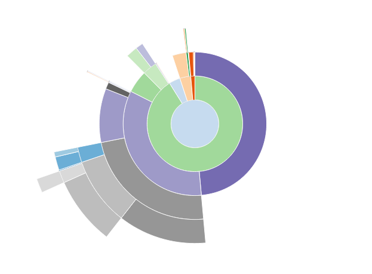
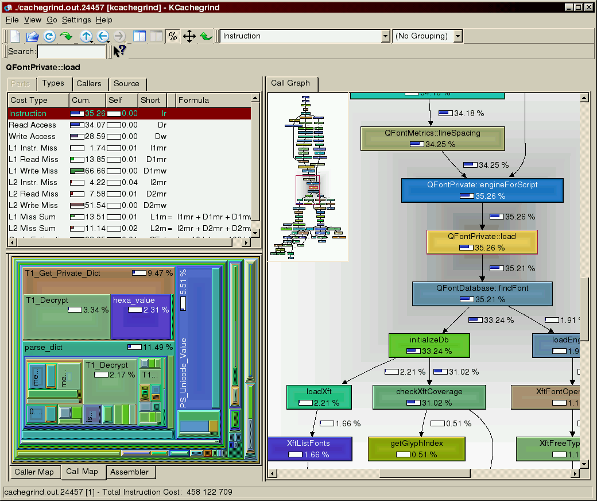
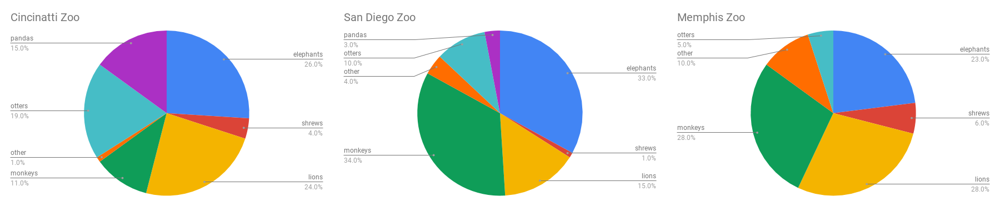

<!doctype html>
<html>
  <head>
<meta charset="utf-8">
<meta name="viewport" content="width=device-width, initial-scale=1.0, maximum-scale=1.0, user-scalable=no">

<title>Lecture 6</title>

<link rel="stylesheet" href="https://cdnjs.cloudflare.com/ajax/libs/reveal.js/3.6.0/css/reveal.css">
<link rel="stylesheet" href="https://cdnjs.cloudflare.com/ajax/libs/reveal.js/3.6.0/css/theme/white.min.css">
<link rel="stylesheet" href="https://maxcdn.bootstrapcdn.com/font-awesome/4.5.0/css/font-awesome.min.css">

<!-- Theme used for syntax highlighting of code -->
<link rel="stylesheet" href="https://cdnjs.cloudflare.com/ajax/libs/highlight.js/9.12.0/styles/github.min.css">
<link href="https://fonts.googleapis.com/css?family=Questrial" rel="stylesheet">

<!-- Printing and PDF exports -->
<script>
    var link = document.createElement( 'link' );
    link.rel = 'stylesheet';
    link.type = 'text/css';
    link.href = window.location.search.match( /print-pdf/gi ) ?  '/revealjs/css/print/pdf.css' : '/revealjs/css/print/paper.css';
    document.getElementsByTagName( 'head' )[0].appendChild( link );
</script>
<script src="https://cdnjs.cloudflare.com/ajax/libs/reveal.js/3.6.0/lib/js/head.min.js"></script>
<script src="https://cdnjs.cloudflare.com/ajax/libs/reveal.js/3.6.0/js/reveal.min.js"></script>


<style type="text/css">
.reveal section.present {
  text-align: left;
}
.centered {
  text-align: center;
}
.reveal {
  font-size: 30px;
  font-family: 'Questrial', sans-serif;
}
.reveal section img {
  box-shadow: none;
  border: 0px;
  display: block;
  margin-left: auto;
  margin-right: auto;
}
.reveal bigtext {
  font-size: 800%;
}

.reveal h1, .reveal h2, .reveal h3 {
  text-transform: none;
}

.reveal .titleslide h1 {
  text-align: center;
}
.reveal .titleslide h2 {
  text-align: right;
}

.vertical_center section {
  vertical-align: middle;
}

.left_abs {
  left:0%;
  text-align: left;
  float: left;
  width:50%;
  z-index:-10;
}

.left {
  left:-8.33%;
  text-align: left;
  float: left;
  width:50%;
  z-index:-10;
}

.right {
  left:31.25%;
  top: 75px;
  float: right;
  text-align: right;
  z-index:-10;
  width:50%;
}

.reveal table td {
  text-align: left;
  padding: 0.2em 0.5em 0.2em 0.5em;
  border: solid; 
}

.reveal table tbody tr:last-child th,
.reveal table tbody tr:last-child td {
  border-bottom: solid; }

.reveal .table-hl {
  background: #aaa;
}

.reveal .slide-number {
  font-size: 36pt;
  right:7%;
}

</style>
  </head>

  <body>
    <div class="reveal">
      <div class="slides">
        <section data-markdown
           data-separator="^\n---\n"
           data-separator-vertical="^\n----\n"
           data-separator-notes="notes?:"
           >
          <script type="text/template">
<!-- .slide: class="titleslide" -->

# Data Visualization
<div style="height: 6.0em;"></div>
## AJ Christensen
## Spring 2019
## Lecture 6

---

## Warm-Up Activity

1. What is the visualization trying to show?
1. What are its methods?
1. What are the strengths / weaknesses?

 * https://gizmodo.com/observatories-across-the-world-announce-groundbreaking-1819500578
 * https://gizmodo.com/let-s-break-down-what-that-monumental-neutron-star-coll-1819613829

---

## Last Week

 * Transformations
 * Colors and color mapping
 * HSV/RGB/etc
 * Image visualization

---

## Review: Color Mapping

 * Choose an accessible, appropriate colormap
   * "Am I showing different things?"
   * "Can these things be compared directly?"
   * "Do I want to demonstrate deviation or gradiation?"
 * Mapping between "data space" and "color space" requires normalization and
   color mapping
   * Normalization: $f(v) => v' \in [0, 1]$
   * Color mapping: $g(v) => RGBA$

---

## This Week

 * Showing Composition
 * Comparing Datasets
 * Traitlets in IPython/Jupyter
 * Visualization Engines
   * bqplot
   * vega-lite

---

## Composition

Don't use a pie chart.

<!-- .slide: data-background-image="images/piechart.png" data-background-size="auto 65%" data-background-position="right 50% bottom 50%" -->

notes:
pie charts force you to analyze things by area or angle, which are multidimensional attributes that are easy to confuse.

which is the most popular zoo animal in this pie chart? Elephants, otters, or lions?

---

## Composition

Don't use a pie chart.

<!-- .slide: data-background-image="images/piechartlabels.png" data-background-size="auto 65%" data-background-position="right 50% bottom 50%" -->

notes:
we can make a marginal improvement by labeling the values.

But we wouldn't be doing visualization if we were interested in just reading text.

---

## Composition

Don't use a pie chart.

<!-- .slide: data-background-image="images/3dpiechart.png" data-background-size="auto 65%" data-background-position="right 50% bottom 50%" -->

notes:
And if 2-dimensional area is difficult to understand, then 3-dimensional volume is even worse. 

3 dimensional values violate the principle of proportional ink, which states that:

 The sizes of shaded areas in a visualization need to be proportional to the data values they represent. 

---

## Alternatives

<!-- .slide: data-background-image="images/donutchart.png" data-background-size="auto 65%" data-background-position="right 50% bottom 50%" -->

notes:
Some people will try to sell you on a modified version of a pie chart called a donut chart that has a hole in the middle. This is a slight improvement because it helps you see the values in the circle as 1-dimensional arc length instead of area. 

But circles are still hard to decipher.

---

## Alternatives

<!-- .slide: data-background-image="images/treemap.png" data-background-size="auto 65%" data-background-position="right 50% bottom 50%" -->

notes:
We can reduce some of the confusion associated with using circles by creating proportional *rectangular* area. Now we can compare along the dimensions of height and width for certain values.

But area is still problematic because it asks us to compare two dimensions - width and height - simultaneously.

---

## Alternatives

<!-- .slide: data-background-image="images/barchart.png" data-background-size="auto 65%" data-background-position="right 50% bottom 50%" -->

notes:
you can show comparitive values more effectively with a bar chart though. These values are easily compared along just one dimension.

---

## Alternatives

<!-- .slide: data-background-image="images/waterfallchart.png" data-background-size="auto 65%" data-background-position="right 50% bottom 50%" -->

notes:
there are really quite a few alternatives. There are many ways to show data stacking up progressively. This waterfall chart shows how each value is part of a whole, which was sort of the idea of the pie chart.

---

## Alternatives

 * Hierarchical data
   * Sunbursts (e.g., [snakeviz](https://jiffyclub.github.io/snakeviz/) )
   * Nested box area (e.g., [callgrind](https://kcachegrind.github.io/html/Home.html) )

<table>
<tr>
<td>
</td><td></td>
</tr>
</table>

notes:
For heirarchical data, you can nest some of these other formats.

---

## Comparison

<!-- .slide: data-background-image="images/columnchart.png" data-background-size="auto 65%" data-background-position="right 50% bottom 50%" -->

notes:
to compare values from multiple sources, you could use collected columns

---

## Comparison

<!-- .slide: data-background-image="images/stackedcolumnchart.png" data-background-size="auto 65%" data-background-position="right 50% bottom 50%" -->

notes:
Or to show they're part of a whole, use a stacked column chart

---

## Comparison

<!-- .slide: data-background-image="images/stackedareachart.png" data-background-size="auto 65%" data-background-position="right 50% bottom 50%" -->

notes:
or to show a time-series, use connected lines that stack on top of each other to show area across the whole canvass. This shows you trends and specific vertical values.

---

## Comparison

JUST NOT THIS!



notes:
Just do not compare pie charts!

---

## Pandas

 * [pandas.pydata.org](http://pandas.pydata.org/)
 * Support for indexing, multi-indexing
 * Data structures
   * Series
   * DataFrame
   * Panel
 * Groupby, select, aggregation features
 * IO features
   * Reading/writing CSV, HDF5
   * Loading data from remote sources

---

## Engines

This week we'll be looking at two new visualization engines.

 * `bqplot`
 * `vega-lite`

---

## bqplot

Our first engine, `bqplot`, is a Jupyter-based interactive plotting system.

It presents two principal interfaces:

1. `pyplot`-like interface, for making the transition from matplotlib easier
```#python
from bqplot import pyplot as plt
plt.figure(title='A Figure')
plt.plot(x_data, y_data)
plt.show()
```
1. An object-oriented API for constructing interactive visualizations
```#python
scatter_chart = Scatter(x=x_data, y=y_data, scales={'x': x_sc, 'y': y_sc})
fig = Figure(marks=[scatter_chart], title='A Figure', axes=[x_ax, y_ax])
display(fig)
```

notes:
We will be using the latter far more frequently than the former.

---

## Object-Oriented Programming


notes:
What are some traits every vehicle has?

---

## Object-Oriented Programming

Vehicles:
 * number of wheels
 * color
 * weight

notes:
this set of traits won't necessarily be useful for things that aren't vehicles. 

---

## Object-Oriented Programming

class Vehicles:
 * int: number of wheels
 * string: color
 * float: weight

notes:
in object-oriented programming, we can use this "class" keyword to create a new object type "vehicle" which has traits that are the data types we're already familiar with - integers, floats, strings, booleans, etc.

This is like buying salad at the grocery store. You can either buy lettuce, onions, croutons, and dressing separately, or you can buy prepackaged salads with different combinations of those things already put together.

---

## Traits and Data

There are two underlying libraries we utilize for interactivity in Jupyter.
The first, `traitlets`, provides methods for datatype-verification and
"watching" for changes.

```#python
import traitlets

class MyObject(traitlets.HasTraits):
    name = traitlets.Unicode()
    age = traitlets.Int()

my_obj = MyObject(name = "Weezer", age = 26)
```
notes:
Before we dig into `bqplot` specifically, we will be examining a handful of methods by which we can provide interaction _as-is_ in Jupyter.

traitlets is a library that allows us to interact with the different attributes of a class.

datatype verification means that you check to make sure those attributes are the types you want them to be.

---

## Watching Traitlets

Once we have an object that has traits, we can watch that object for changes.

```#python

def name_changed(change):
    print(change['new'])

my_obj.observe(name_changed, ['name'])
```

In this case, we are watching the trait `name` for changes.  When a change
occurs, the function `name_changed` is called.  The argument is a dict with
these values:

 * `new`: the new value the trait has
 * `old`: the previous value
 * `type`: the type of change
 * `owner`: the object that owns this trait
 * `name`: the name of the trait

---

## Widgets

We can use the `ipywidgets` library to build out widgets in Jupyter notebooks.
These widgets can be quite extensive with many different operations;
additionally, they can have substantial CSS styling.

We've used simple examples before.  For instance, we can create an interactive
function very easily:

```#python
import ipywidgets

@ipywidgets.interact(name = ['Weezer', 'Nerf Herder', 'Mustard Plug'])
def print_bandname(name):
    print(name)
```

This creates a dropdown that we can select an item from, which is supplied.
What this is doing implicitly is creating a widget with a `value` attribute,
and whenever that `value` is changed, the function is called again.

---

## Widget Types 1

Automatically creating widgets using `@ipywidgets.interact` is very handy and
useful for quick operations, but we can do this more deliberately as well.
There are a number of widgets available in `ipywidgets` already:

 * `IntSlider`, `FloatSlider`, `IntRangeSlider`, `FloatRangeSlider`,
   `IntProgress` and `FloatProgress` all display or allow the user to choose
   values.
 * `IntText`, `FloatText`, `BoundedIntText` and `BoundedFloatText` let the user
   input explicit values to a widget.

---

## Widget Types 2

There are additional widget types that can provide indicators or restricted
selections.

 * `ToggleButton`, `Checkbox` and `Valid` provide boolean indicators; `Valid`
   is read-only.
 * For selection, there are `Dropdown`, `RadioButtons`, `Select`,
   `SelectionSlider` and several others.
 * Strings can be provided using `Text`, `TextArea` and `HTML`.
 * Actions can be enabled through `Button` objects.

Widgets can also be laid out using `HBox`, `VBox`, `Tab`, and `Accordion`.

---

## Events and Linking

In addition to watching for changes, we can watch for events and we can link
two (or more) values between different widgets.  

The special method `on_click` on a `Button` allows for a function to be called
when something is clicked.  We can also link using `ipywidgets.link` and
supplying traits.  For example:

```#python
m = MyObject(name = "Weezer", age=26)
l = ipywidgets.Label()
ipywidgets.link((m, 'name'), (l, 'value'))

display(l)

m.name = 'Nerf Herder'
```

notes:
**Exercise:** Add a button and make this change occur when clicked.

---

## bqplot

Now that we've learned a bit about widgets, we can start to dig into `bqplot`.
`bqplot` is based around traitlets and widget objects; every object you work
with will have traits and may be represented as a widget.

When we use `bqplot` we will be constructing `Figure` objects, which will
contain `marks` and `axes`.  To use these, we will build mark objects (`Bars`,
`Lines`, `Scatter`, `Map`, etc) and describe the relationship between points
using `Scale` objects.

We will be building out these objects and their relationships to develop
interactivity.

---

## bqplot objects

 * A mark is some mechanism for displaying data.  For example, we might have
   data that has a set of x and y values, which we can use `Lines` to
   represent.
 * `Scale` objects describe relationships between visual attributes (position)
   and data values.
 * `Axis` objects are where data are placed.
 * `Figure` objects contain marks and axes, as well as interaction.

---

## bqplot introduction

Our first example will be a simple lineplot.

```#python
import bqplot
import numpy as np

x = np.arange(100)
y = np.random.random(100) + 5

x_sc = bqplot.LinearScale()
y_sc = bqplot.LinearScale()
lines = bqplot.Lines(x = x, y = y, scales = {'x': x_sc, 'y': y_sc})
ax_x = bqplot.Axis(scale = x_sc, label = 'X value')
ax_y = bqplot.Axis(scale = y_sc, label = 'Y value', orientation = 'vertical')
fig = bqplot.Figure(marks = [lines], axes = [ax_x, ax_y])
display(fig)
```

---

### vega-lite

vega-lite is a high-level method for describing visualizations independently of
their data.

We will be exploring this using the online editor at:

https://vega.github.io/editor/

---

## Assignment 3

 * Using traitlets, widgets and bqplot, build a notebook that:
   1. Uses the UFO datasets
   2. Allows changing the x and y fields on a scatter plot from the UFO dataset
   3. Displays tooltips when hovering over individual items
 * Build a second widget that displays binned, aggregate values where you can change:
   1. The field to "bin"
   2. The method of aggregation (sum, mean, min, max, count)
   3. The number of bins
 * This will be collected via nbgrader, and we will work in-class next week on
   expanding it.

---

## Today: Let's Try Things

Today we are going to build comparisons with our (virtual) hands.

 * A Bit More Matplotlib
   * Patches and elements
   * "Projections"
   * Polar projections
 * Traitlets

## Next Week: Lab all day

          </script>
        </section>
      </div>
    </div>
<script>
    // More info about config & dependencies:
    // - https://github.com/hakimel/reveal.js#configuration
    // - https://github.com/hakimel/reveal.js#dependencies
    Reveal.initialize({
        dependencies: [
            { src: 'https://cdnjs.cloudflare.com/ajax/libs/reveal.js/3.6.0/plugin/markdown/marked.js' },
            { src: 'https://cdnjs.cloudflare.com/ajax/libs/reveal.js/3.6.0/plugin/markdown/markdown.min.js' },
            { src: 'https://cdnjs.cloudflare.com/ajax/libs/reveal.js/3.6.0/plugin/notes/notes.min.js', async: true },
            { src: 'https://cdnjs.cloudflare.com/ajax/libs/reveal.js/3.6.0/plugin/highlight/highlight.min.js', async: true, callback: function() { hljs.initHighlightingOnLoad(); } },
            { src: '/reveal.js-plugins/chalkboard/chalkboard.js' },
            { src: 'https://cdnjs.cloudflare.com/ajax/libs/reveal.js/3.6.0/plugin/math/math.min.js', async: true }
        ],
		keyboard: {
			67: function() { RevealChalkboard.toggleNotesCanvas() },	// toggle notes canvas when 'c' is pressed
			66: function() { RevealChalkboard.toggleChalkboard() },	// toggle chalkboard when 'b' is pressed
			46: function() { RevealChalkboard.clear() },	// clear chalkboard when 'DEL' is pressed
			 8: function() { RevealChalkboard.reset() },	// reset chalkboard data on current slide when 'BACKSPACE' is pressed
			68: function() { RevealChalkboard.download() },	// downlad recorded chalkboard drawing when 'd' is pressed
		},
        center: false,
        transition: 'none',
        backgroundTransition: 'none',
        showNotes: true,
        progress: false,
	slideNumber: true,
    });
</script>
  </body>
</html>

